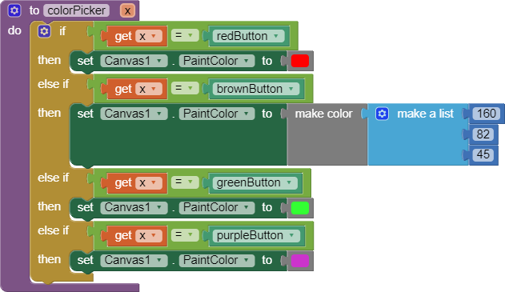
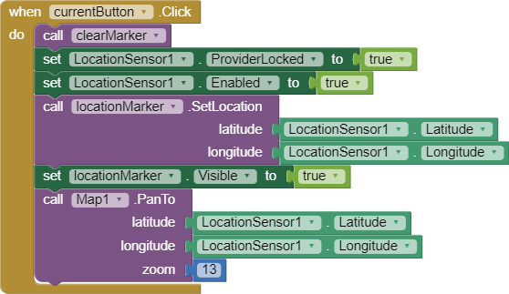
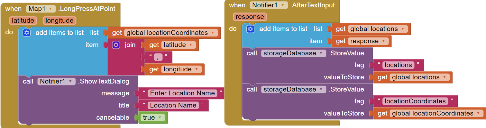

Chapter 3 Questions
Unit 3.2
1. Explain the meaning of the statements shown here, both in AP CSP pseudocode and App Inventor. For example, suppose the variable X has the value 10 before the statement is executed. What value would it have after the statement is executed?
The image represents setting the variable x to itself plus one. If the global variable x was already 10 before the code is executed, after execution, it becomes 10 plus 1 which is 11.
2. One aspect of abstraction is that it helps to reduce details to focus on what's relevant. How does the use of a variable, such as dotsize, instead of a value, such as '5', help to reduce detail and focus on what is essential in this program?
Attributing a piece of data to a variable helps make the code more abstract as the complex line of code that has a piece of data is now stored inside of a single word variable that can be called on at anytime to be used or changed. This reduces the need to remember the line of code that stores the data and to use a word instead.
Unit 3.3
1. Decode this message by converting it from binary to ASCII: 1000001 1110000 1110000 0100000 1001001 1101110 1110110 1100101 1101110 1110100 1101111 1110010 0100000 1010010 1001111 1000011 1001011 1010011 0100001 You can use this chart to help you:
App spin ventor! Rocks!
2. Describe what it means to say that JPEG is a lossy compression technique and whether or not it affects the quality of camera pictures.
When a JPEG has gone through lossy compression, the pixels that are repetitive and not needed are removed completely from the file, shortening it. The technique does lower the quality camera pictures but not enough for humans to visibly notice.
3. Give a specific example of a binary sequence that can represent more than one type of data -- e.g., a number, a color, a character -- and describe how to interpret its different values.
A binary sequence that can be 00101 which can represent a number, a coor, and a character. To interpret the different values you can convert the values to decimal, hexcode, and ASCII to get different types of data.
Unit 3.4
1.For enhancement #5 (the "If Block Exercise") give a brief description of your solution to this problem. PROVIDE A SCREENSHOT OF YOUR APP'S CODE -- the revised blocks -- and describe how the if/else block works to solve the problem in this case. If appropriate, include a description of any significant problems or bugs you encountered in solving this problem. App Inventor now has a Download Blocks as Image feature (right click on the white space in the blocks editor to choose) that also can be used to take a screenshot of all of your code or the Windows snipping tool can be used.
For enhancement #5 I used a function/procedure to do the job that the buttons had to do. The prodecure contained all of the color change code depending on what button was clicked, so if the function was called and it takes in the button value, it takes in the name of the button pressed and compares it with an if else statement, then the conditional will change the color of the pen. The buttons on the otherhand called the function/procedure and gave it its name as a value for the function/procedure to use.
2. When you use the Camera component to take a picture as the Canvas background, explain why the picture goes away when the app is restarted. HINT: Think about the different hardware components we talked about in an earlier lesson and where on the device the picture is stored. What do you think could be done to prevent the picture from disappearing when the app is restarted?
The camera picture goes away when the app is restarted because of how the image taken is not stored anywhere and just replaces the background image of the canvas. To keep the image after a restart, you must store the image into the database and set the canvas to load the image from the database when
Unit 3.5
1. The Wikipedia article on refactoring talks about code smell and one motivation for engaging in refactoring. What is code smell? Describe briefly two examples of "code smell" and how refactoring would eliminate them.
Code smell is code that can lead to problems in the furture. Recfractoring can solve the issue since it changes the code to be more clean and efficient to prevent any issues in the future.
2. Insert a screenshot of the procedure from your app below.

3. What are the advantages of using procedural abstraction? Name at least 2 advantages.
Advantages of procedural abstraction are the cleaning up of code to be readable and to combine the functions of different components into one.
Unit 3.6
1. (POGIL) Describe an algorithm for identifying the card that was flipped.
The algorithm for identifying the flipped cards was to add a row of cards on the outside of the set of cards to even out the face up cards in the rows and columns, then if there was an odd set of face up cards, it would be the flipped one.
2. (POGIL) The card "trick" shows that it is always possible to identify the card that was flipped as long as only one card was flipped. Would it be possible always to determine if an error occurred if two cards were flipped?
Flipping two cards would work only if the two cards do not interfere with each other. Since flipping two cards in the same row or column would cause the amount of flipped cards to be even, it would be very hard to determine what card was flipped. The column or row from the 2 card flips would also lead to one of the 2 having an error while another having hidden errors.
Unit 3.7
1. Explain how the error card trick from the Error Detection lesson uses a parity scheme. Was it an even or odd parity scheme?
The error card trick detected the errors by using parity bits to detect any odd values in the row and columns.
2. What are some of the limitations of using parity bits for error detection?
Limitations for using parity bits for error detections are that if an even amount of cards where changed in the rows and cloumns, the user or computer would not be able to detect the error.
3. Another type of error detection is a check sum. Research what a check sum is and then describe it in your own words. Can a check sum identify where an error occurs?
The check sum is a error detecton system that has the sum of different bits within the file and if changes were made, then it gets checksums from the file later to check if the values are different or not.
Unit 3.8
1. How are lists used in this app? Why is a list a useful data abstraction or an abstract data type (ADT) in programming? Is it easy to add new destinations to the tour?
2. How do APIs simplify complex programming tasks? Pick an app that you use on your device (e.g. Twitter, Google Maps) and see whether it provides an API and some of the functions you can control with it. Describe your results below.
APIs help simplify complex programming tasks by allowing the program to communicate with a server instead of working on their own to complete the job. Apps like Google Maps would be enormous in size if it wasn't for APIs. The API allows Google Maps to communicate and send information that the user needs when the time comes.
3.How is GPS used in this app? Do some research to find out how GPS works and describe it here in a couple sentences.
The GPS is used in the Map App by allowing the map to locate the user's devices location. GPS works by letting the phone communicate with navigation satellites that surround the Earth. Once a certain amount of sattellites return a signal, the location is send to the user.
4. Insert screenshots of the enhancements that you made below and describe how they work.
The enhancement shown in the code is the ability for the app to show the location of the user the code first starts when the show location button is clicked and then hides all opened markers from the screen and shows a marker on the location of the phone.
Unit 3.9
1. What does it mean to say that data is 'persistent'?
When data os persistent is means that the data does not go away after a simple reset to the system and can be retrieved again in the future, even when the app is closed.
2. What's the difference, in terms of where data is located, for data stored in a global variable vs. data stored in a database?
Data stored in a global variable are temporary and are stored in RAM. The don't stick around after the app is closed. On the other hand, data in a database stay after the app is closed and are stored inside of hard drives.
3. Include screenshots and explanations of your enhancements.
The enhancement in this screenshot is the ability for the user to save a selected location on the map. The app first detects a selected location on the map and then asks the user to list the locations name. Once the user writes down the name, the lat and longitute of the location is added onto a coordinate list while the name is saved on a name list. The data then is relayed onto the listpicker, so when the user opens it up again, the added location is there.
Unit 3.10
1. What is metadata? Give an example of how a piece of metadata could be used to increase the usefulness of an image or document.
Metadata is data that describes what the app is and information on it. Metadata can increase image and document usefulness as it allows the user to check the creator, when it was made, and what the file has inside.
2. What is a model?
A model is a prepresentation of something in the living world with mathematical equations or a 3D object that shows the real life counterpart.
3. What's the difference between a raster image and an ASCII representation of a text document?
The difference between a raster image and an ASCII representation of a text document is that raster images use pixels in a grid pattern to represent that image whereas ASCII uses 8 bit code to represent each letter in the document.
4. What are filename extensions? What are they used for?
Filename extensions are the letters after the name of the file to indicate what type of file it is.
5. What is lossless representation? What is lossy representation? What are the trade-offs in using each representation?
Lossless representation is a representations that allows the full image to be viewed whereas lossy representation shows the image in a lower quality. Lossless representation take up more space but are higher quality whereas lossy representation takes up less space but has lower quality.
6. What is steganography and what is it used for? Describe in your own words the steganography algorithm used in the activity.
Steganography is an art which hides messages inside of something.
7. What would you have to do to delete a document from your computer so that it could not possibly be read by anyone else?
To delete a document from my computer to prevent anyone from seeing it, I would have to delete the file and then go to the recycling bin to permanently delete the file from the computer.
8. What is free and open source software? Provide an example.
Free open source software is software that is open to the public and anyone is allowed to edit and change it. An example of open source software is Android.
9. How has retouching become a controversial issue? Give an example.
Retouching has become a controversial issue as it puts a standard to women around the states on what feature are attractive. An example of such an issue is when young women become insecure about their look because of retouched images in media everyday that show standards that are simply almost impossible to reach.
10. Would you rather own a camera (or camera phone) with a higher number of megapixels or lower? Explain.
I would rather own a camera witha higher number of megapixels because it allows the camera to show more pixels within the image to create clearer images.
11. Other than digital images, what might be an example of a computer model? Explain your answer based on the definition of a model.
An example of a computer model would be a CD. CD are another example of computer models because they can store data with bits and are shown when loaded onto a computer.
12. The code that implements App Inventor is open source and its impact on education is obvious. Find another example of open source software and describe its positive impact on education, business or society.
Another open source software is Android. Android has positive impacts on education as it helpes young learners of CS to work on projects on apps such as MIT App inventor to display on the screen.